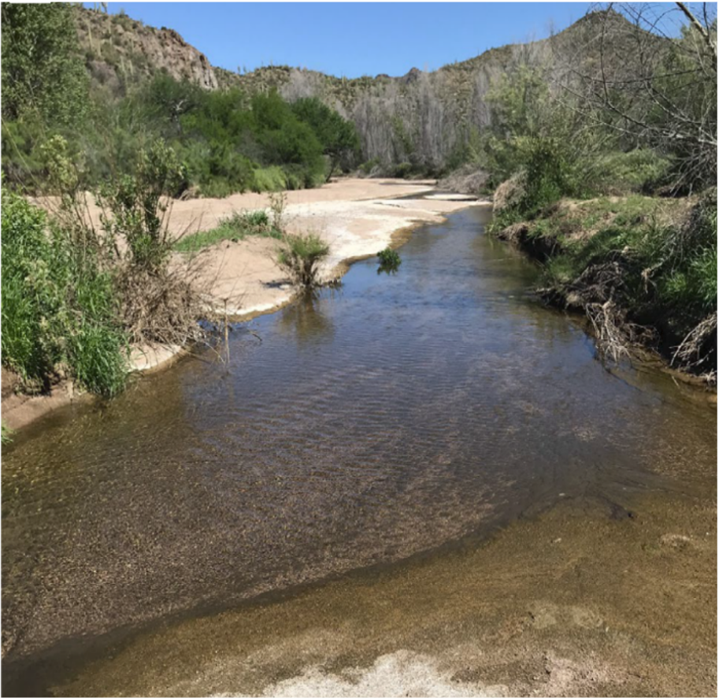
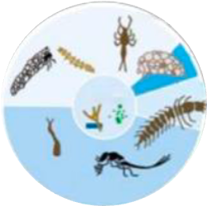

Biodiversity–Stability Relationships
While natural ecological communities can maintain stability through various mechanisms, little is known about how climate change might alter the effectiveness of these mechanisms and their consequences for ecosystem functions and services.
Using four-decade observations of macroinvertebrate community in a desert stream, our study shows that the mechanisms historically governing community stability may be largely weakened as climate changes. Some may even flip to a destabilizing force and drive ecological communities to a state of much lower stability and higher sensitivity to environmental fluctuations.